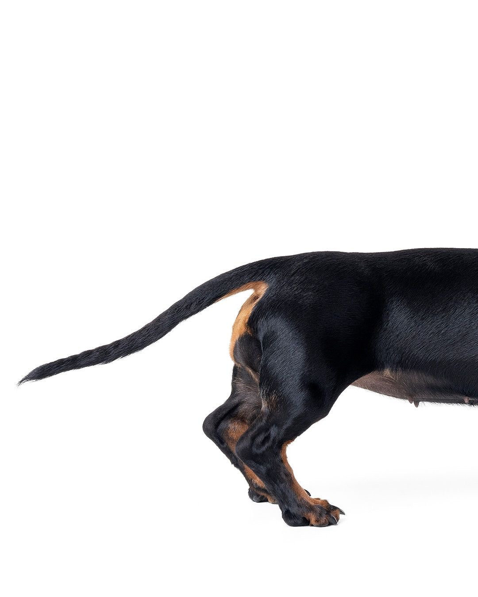
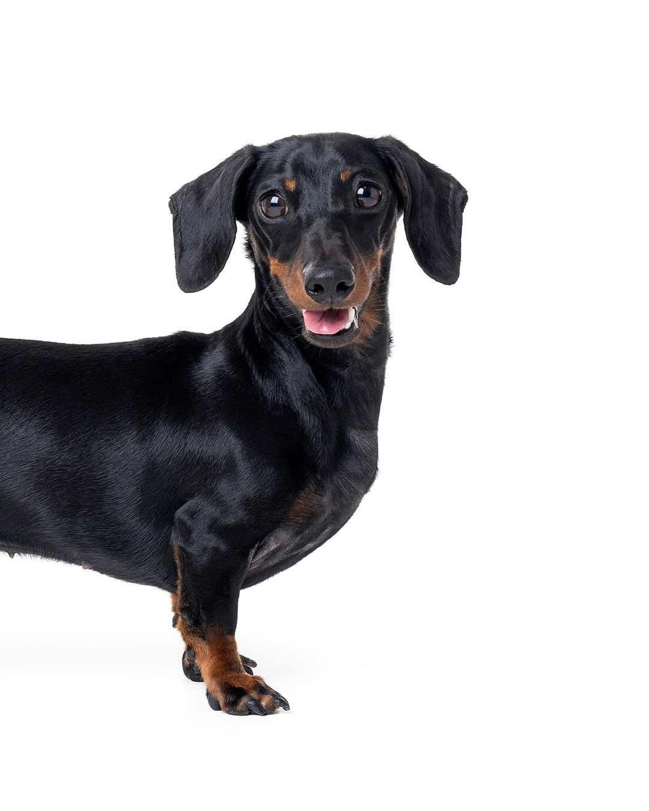

Такса - німецька порода мисливських собак, яку неможливо не впізнати: довге тіло, короткі лапи і погляд “я тут головний”.
Характер:
Фішки породи:
Такса чудово підходить для квартири, але потребує прогулянок, любить ігри і може “охороняти” дім голосніше за великих собак
Попри свій розмір, такса часто вважає, що вона “лев, охоронець і головний у домі”
Такса — це маленьке тіло + величезний характер + море харизми

